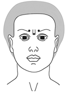
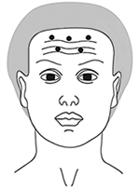
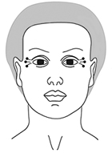
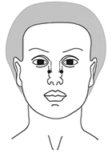
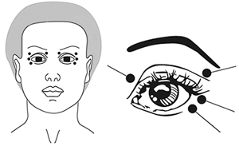

|
 |
| РЕЛАТОКС® (RELATOX) botulinum toxin a - haemagglutinin complex лиофилизат д/пригот. р-ра д/инъекций | ||||||||||||||||||||||||||||||||||||||||||||||||||||||||||||||||||||||||||||||||||||||||||||||||||||||||||||||||||||||||||||||||||||||||||||||||||||
|
Клинико-фармакологическая группа: Миорелаксант. Ингибитор высвобождения ацетилхолина Номер и дата регистрации: ЛП-001593 от 19.03.12 Код ATX: M03AX01 |
Владелец регистрационного удостоверения: зарегистрировано и произведено Представительство: | |||||||||||||||||||||||||||||||||||||||||||||||||||||||||||||||||||||||||||||||||||||||||||||||||||||||||||||||||||||||||||||||||||||||||||||||||||
Форма выпуска, состав и упаковка Лиофилизат для приготовления раствора для инъекций в виде порошка или уплотненной пористой массы белого или белого с желтоватым оттенком цвета.
Вспомогательные вещества: желатин - 6 мг, мальтоза - 12 мг. Состав растворителя на 1 мл (при комплектации препарата растворителем*): натрия хлорид - 9 мг, вода д/и - до 1 мл. 50 ЕД - флаконы (1) - контейнеры полимерные (1) - пачки картонные. * выпускается в комплекте с растворителем: натрия хлорид, растворитель для приготовления лекарственных форм для инъекций 0.9% (Р N002009/01) по 5 мл в ампуле, помещенной в упаковку ячейковую контурную. | ||||||||||||||||||||||||||||||||||||||||||||||||||||||||||||||||||||||||||||||||||||||||||||||||||||||||||||||||||||||||||||||||||||||||||||||||||||
| ||||||||||||||||||||||||||||||||||||||||||||||||||||||||||||||||||||||||||||||||||||||||||||||||||||||||||||||||||||||||||||||||||||||||||||||||||||
Описание препарата основано на официально утвержденной инструкции по применению и утверждено компанией-производителем для издания 2022 г. | ||||||||||||||||||||||||||||||||||||||||||||||||||||||||||||||||||||||||||||||||||||||||||||||||||||||||||||||||||||||||||||||||||||||||||||||||||||
Фармакологическое действие |
Фармакокинетика |
Показания |
Режим дозирования |
Побочное действие |
Противопоказания |
Беременность и лактация |
Особые указания |
Передозировка |
Лекарственное взаимодействие |
Условия хранения и сроки годности |
Условия реализации
Фармакологическое действие
Релатокс® Токсин ботулинический типа А в комплексе с гемагглютинином, лиофилизат для приготовления раствора для инъекций, представляет собой выделенный из Clostridium botulinum типа А ботулинический токсин в комплексе с гемагглютинином, очищенный методом гель-хроматографии и лиофильно высушенный. Молекула ботулинического токсина типа А состоит из связанных дисульфидным мостиком тяжелой (с молекулярной массой 100000 дальтон) и легкой (с молекулярной массой 50000 дальтон) цепей. Тяжелая цепь имеет высокое сродство связывания со специфическими рецепторами, расположенными на поверхности нейронов-мишеней. Легкая цепь обладает Zn2+-зависимой протеазной активностью, специфичной по отношению к цитоплазматическим участкам синаптосомальносвязанного протеина, имеющего молекулярную массу 25000 дальтон (SNAP-25) и участвующего в процессах экзоцитоза. Первый этап действия ботулинического токсина типа А - специфическое связывание молекулы с пресинаптической мембраной. Второй этап - проникновение связанного токсина в цитозоль нерва посредством эндоцитоза. Внутриклеточно легкая цепь действует как Zn2+-зависимая протеаза цитозоля, избирательно расщепляя SNAP-25, что на третьем этапе приводит к блокаде высвобождения ацетилхолина из пресинаптических терминалей холинергических нейронов. Конечным эффектом этого процесса является стойкая хемоденервация. При в/м введении развиваются 2 эффекта: прямое ингибирование экстрафузальных мышечных волокон посредством ингибирования альфа-мотонейронов на уровне нервно-мышечного синапса и ингибирование активности мышечных веретен посредством торможения гамма-мотонейронного холинергического синапса на интрафузальном волокне. Уменьшение гамма-активности ведет к расслаблению интрафузальных волокон мышечного веретена и снижает активность Ia-афферентных нервных волокон. Это приводит к снижению активности мышечных рецепторов растяжения, а также к эфферентной активности альфа- и гамма-мотонейронов. Клинически это проявляется выраженным расслаблением инъецированных мышц и значительным уменьшением боли в них. Наряду с процессом денервации в этих мышцах протекает процесс реиннервации путем появления боковых отростков нервных окончаний, что приводит к восстановлению мышечных сокращений через 4-6 месяцев после инъекции. Фармакокинетика
Фармакологический эффект развивается в месте инъекции. Пресинаптический захват и ретроградный аксональный транспорт из места введения незначителен. Продолжительность клинического эффекта составляет 4-6 мес. Восстановление нервно-мышечной активности происходит за счет развития новых аксонных отростков, которые образуют новые функциональные активные нервно-мышечные синапсы, что приводит в итоге к восстановлению мышечных сокращений. При введении в терапевтических дозах не проникает через ГЭБ и не вызывает существенных системных эффектов. Выводится почками в виде нетоксичных метаболитов. Антитела к комплексу ботулинического токсина типа А с гемагглютинином образуются у 1-5% пациентов после повторных инъекций. Образованию антител способствуют введение препарата в высоких дозах и повторные инъекции малыми дозами через короткие промежутки времени. В случае образования антител к ботулиническому токсину типа А возможно снижение терапевтического эффекта препарата при последующих его введениях. Показания
* Эффективность и безопасность лечения спастичности четырехглавой мышцы при ДЦП у детей в возрасте до 7 лет не изучена. Режим дозирования
Перед разведением препарата центральную часть пробки флакона обрабатывают спиртом этиловым. Препарат растворяют, вводя во флакон 1-8 мл 0.9% раствора натрия хлорида для инъекций путем прокола пробки стерильной иглой длиной 23 или 25 мм. Запрещается открывать флакон и удалять пробку. Раствор препарата представляет собой прозрачную бесцветную жидкость. Приготовленный инъекционный раствор вводят инсулиновым шприцем с несъемной иглой диаметром 0.27-0.29 мм. Положение пациента при введении препарата в мышцы лица - сидя на стуле, затылок зафиксирован. Таблица 1. Концентрации препарата, получаемые при разведении Релатокс® Токсин ботулинический типа А в комплексе с гемагглютинином 50 ЕД
Таблица 2. Концентрации препарата, получаемые при разведении Релатокс® Токсин ботулинический типа А в комплексе с гемагглютинином 100 ЕД
Дозы, схемы и способы введения препарата при коррекции мимических морщин Сглаживание межбровных морщин В процессе формирования межбровных морщин участвуют m. corrugator supercilii (мышца, сморщивающая бровь) и m. procerus (мышца гордецов). Для определения места инъекций с целью устранения межбровных морщин пациента просят нахмуриться, в этот момент хорошо пальпируется m. corrugator supercilii, при этом точка наиболее выраженной мышечной активности должна находиться на 0.5 см вверх от верхнего медиального края брови. Аналогичным образом производят разметку на другой стороне. Игла вводится в толщу брюшка, направление иглы - либо под углом 45° спереди назад, медиально, либо под углом 90°. Глубина введения иглы - 7-10 мм. Если игла упрется в надкостницу, ее надо вытянуть на 1 мм и после этого ввести препарат. Точка введения препарата в m. procerus располагается в центре линии, соединяющей медиальные края бровей. Положение иглы - спереди назад, глубина введения иглы - 2-3 мм. В каждую отмеченную точку вводят препарат Релатокс® Токсин ботулинический типа А в комплексе с гемагглютинином от 2.5 до 7.5 ЕД в зависимости от выраженности морщин, возраста и пола. Общее количество препарата, введенного в эту область, не должно превышать 25 ЕД.  Рис.1 Точки введения для разглаживания межбровных морщин. Сглаживание горизонтальных морщин в области лба. В образовании горизонтальных морщин в области лба участвует musculus epicranius (мышца надчерепная). Для сглаживания лобных морщин пациента просят поднять брови и на максимуме амплитуды отмечают точки с наиболее выраженной мимической активностью. С целью исключения птоза брови, расстояние между точкой инъекции и верхним краем брови должно составлять не менее 2 см. Используется 5-10 точек и в каждую вводят от 1.25 ЕД до 2.5 ЕД препарата Релатокс® Токсин ботулинический типа А в комплексе с гемагглютинином. При незначительно выраженных морщинах вводится по 2.0-2.5 ЕД в середину лобной области правой и левой стороны. При желании пациента сохранить движение кончиков бровей, точки инъекции можно расположить V-образно. Если у пациента очень высокий лоб и складки образуются близко под линией волос, можно дополнительно ввести по 1.25-2.5 ЕД в 2-3 точки параллельно линии роста волос. Общее количество препарата на данную область не должно превышать 20 ЕД.  Рис.2 Точки введения для разглаживания складок лба. Сглаживание морщин в периорбитальной области Морщины, расходящиеся радиально вокруг глаз, так называемые "гусиные лапки", возникают в результате активности круговой мышцы глаза. Для выбора дозы надо попросить пациента рассмеяться и в это время очертить примерные границы области кожи с максимальным количеством складок. Для уменьшения "гусиных лапок" необходимо произвести несколько инъекций (от 2 до 4 с каждой стороны) в область проекции m. orbicularis oculi (мышца глаза круговая) на расстоянии не менее чем 1 см от наружного угла глаза, а также в область латеральной части нижнего века в местах максимальной мышечной активности. Расчет дозы производится исходя из площади этой поверхности в покое: в каждую точку вводится 2.0-2.5 ЕД препарата, диффузия из одной точки имеет радиус 0.5-1.0 см, следовательно, расстояние между точками введения должно составлять в среднем 1.0-2.0 см. Максимально допустимое количество вводимых в периорбитальную область единиц не более 25 ЕД на одну сторону. Чтобы не нарушать пропорции лица, необходимо тщательно следить за симметричностью расположения точек введения. Препарат в области "гусиных лапок" не вводится очень низко, т.к. возможно нарушение симметричности углов рта и носогубной складки вследствие диффузии препарата в область m. zygomaticus major (мышца скуловая большая).  Рис.3 Точки введения в периорбитальную область. Сглаживание морщин в области спинки носа При наличии выраженных морщин в области спинки носа препарат вводится непосредственно в m. nasalis (мышца носовая) с каждой стороны по 2.5 ЕД препарата.  Рис.4 Точки введения для разглаживания морщин спинки носа. Сглаживание морщин в нижней части лица Крылья носа. Препарат вводится непосредственно в крыльную часть m. nasalis по 2.5 ЕД с каждой стороны. Верхняя губа. Инъекции производятся вдоль красной каймы верхней губы в/к непосредственно в морщины, отступая от края на 2 мм, по 1.25 ЕД в каждую точку, количество точек от 4 до 6. Углы рта. Препарат вводится п/к в количестве 2.5 ЕД непосредственно в m. depressor anguli oris (мышца, опускающая угол рта). Подбородок. Препарат вводится п/к в количестве 2.5 ЕД непосредственно в m. mentalis (мышца подбородочная). Дозы, схемы и способ введения препарата при лечении блефароспазма При лечении блефароспазма препарат вводится поверхностно в/м шприцем с иглой калибром 28-30 в следующие точки: две точки на верхнем веке, одна точка на латеральной половине нижнего века и одна точка у латерального угла глаза. В каждую точку следует вводить 2.5-5.0 ЕД. Средняя начальная доза 15-25 ЕД на одну сторону.  Рис.5 Точки введения при блефароспазме. Максимально допустимое количество вводимых в периорбитальную область единиц не более 25 ЕД на одну сторону. Выраженный клинический эффект от введения препарата проявляется в интервале от 2 до 14 дней после инъекции, в зависимости от индивидуальных особенностей организма, и длится в течение 4-6 месяцев. При неэффективности первой процедуры при любом выше описанном лечении, т.е. отсутствия значительного клинического улучшения, по сравнению с исходным состоянием, через 1 месяц после введения препарата, необходимо:
При отсутствии эффекта от введения препарата или снижении его выраженности после повторных инъекций, следует рекомендовать другие методы лечения. Дозы и способ введения препарата при лечении спастичности мышц верхней конечности после ишемического инсульта Раствор препарата вводят иглой размером 25G, 27G или 30G в поверхностные мышцы и более длинной иглой в глубокие мышцы верхней конечности. Раствор препарата можно вводить под ЭМГ-контролем для установления мышц, вовлеченных в патологический процесс с использованием иглы для ЭМГ-контроля. Расчет дозы препарата и определение числа точек для инъекций проводится индивидуально для каждого пациента с учетом размера мышц, числа и локализации вовлеченных в патологический процесс мышц, выраженности спастичности. Таблица 3. Дозы препарата Релатокс® Токсин ботулинический типа А в комплексе с гемагглютинином при введении в мышцы верхней конечности
Максимальная суммарная разовая доза на один курс лечения, использованная в клинических исследованиях, составила не более 400 ЕД, распределенная между выбранными мышцами. В клинических исследованиях период наблюдения за пациентами составил 12 недель после инъекции. Уменьшение мышечного тонуса отмечалось через неделю после инъекции, достигая максимума в течение 4-8 недель. На 12 неделе также отмечалось снижение уровня спастичности по сравнению с исходным уровнем. Целесообразно применять инъекции препаратом Релатокс® Токсин ботулинический типа А в комплексе с гемагглютинином в комбинации со стандартной схемой лечения и реабилитации постинсультной спастичности. Дозы и способ введения препарата при лечении спастичности верхней и нижней конечностей у детей 2-17 лет с детским церебральным параличом Раствор препарата вводят иглой размером 23-26G. Раствор препарата возможно вводить под ЭМГ-контролем для установления мышц, вовлеченных в патологический процесс, с использованием иглы для ЭМГ-контроля. Расчет дозы препарата и определение числа точек для инъекций проводится индивидуально для каждого пациента с учетом размера мышц, числом и локализацией вовлеченных в патологический процесс мышц, выраженности спастичности. Таблица 4. Дозы препарата Релатокс® Токсин ботулинический типа А в комплексе с гемагглютинином при введении в мышцы верхней и нижней конечностей при лечении спастичности у детей с ДЦП в возрасте 2-17 лет
* Максимальная суммарная разовая доза при сгибательной установке кисти и при сгибательной установке пальцев кисти, которая использовалась в клинических исследованиях препарата, не превышала 80 ЕД. ** Детям до 7 лет проведение инъекций в четырехглавую мышцу бедра противопоказано. Максимальная суммарная разовая доза на один курс лечения, использованная в клинических исследованиях, составила не более 200 ЕД, распределенная между выбранными мышцами. В клинических исследованиях период наблюдения за пациентами составил 12 недель после инъекции. Уменьшение мышечного тонуса отмечалось через неделю после инъекции, достигая максимума в течение 4-8 недель. На 12 неделе также отмечалось снижение уровня спастичности по сравнению с исходным уровнем. При ДЦП целесообразно применять инъекции препаратом Релатокс® Токсин ботулинический типа А в комплексе с гемагглютинином в комбинации со стандартной схемой лечения и комплексом реабилитационных процедур. Дозы и способ введения препарата при лечении аксиллярного гипергидроза Инъекции раствора препарата производят в/к при помощи инсулинового шприца с иглой 30G. Инъекции могут быть сделаны в 10-20 точек в зависимости от степени выраженности гипергидроза. Для уменьшения болезненности ощущений перед процедурой допускается применение местных анестезирующих средств. Область введения препарата определяют пробой Минора. Проба проводится до лечения и, при необходимости, в динамике, при комнатной температуре после 15-минутного отдыха. Для проведения пробы необходимо:
Пациент находится в положении лежа, руки под головой. Область потоотделения обрабатывают 5% спиртовым раствором йода и через 1 мин на эту зону салфеткой или кисточкой наносят тонким слоем картофельный крахмал. Результаты теста оценивают через 5 мин. При наличии потоотделения визуально наблюдается окрашивание обработанной поверхности в синий цвет. Интенсивность окраски (от бледно-синего до сине-черного) коррелирует с активностью потоотделения. После проведенной пробы площадь гипергидроза отмечают маркером, затем крахмал смывают спиртом или другим антисептиком. Общая доза вводимого в одну подмышечную область препарата составляет 30-50 ЕД. Точки инъекции располагаются на расстоянии 1-6 см друг от друга. Таким образом, 50 ЕД могут вводиться в 10-20 точек, по 5 ЕД на точку. Если желаемый эффект не достигается, то возможно последующее увеличение дозы до 100 ЕД в каждую подмышечную область. Дозы и способ введения препарата при лечении цервикальной дистонии (спастической кривошеи) Раствор препарата вводят иглой размером 25-30 G/0.50-0.30 мм. В клиническом исследовании по изучению применения препарата Релатокс® при цервикальной дистонии, вводимые дозы препарата варьировали от 200 до 280 ЕД (общая суммарная доза). Как и при любом медикаментозном лечении, для пациентов, не получавших ранее терапии ботулиническим токсином, в качестве начальной дозы должна использоваться минимальная эффективная доза. Доза, вводимая в каждую точку, не должна быть более 50 ЕД. В грудино-ключично-сосцевидную мышцу вводят не более 100 ЕД препарата. Для уменьшения риска дисфагии не рекомендуется двухстороннее введение препарата в грудино-ключично-сосцевидную мышцу. Суммарная доза препарата во время первой процедуры не должна превышать 200 ЕД, при последующих курсах дозу корректируют с учетом ответа на начальное лечение (в зависимости от предшествовавшего клинического результата и наблюдавшихся побочных эффектов). При любом разовом введении не стоит превышать общую (суммарную) дозу 300 ЕД. Оптимальное количество точек для инъекции зависит от размера мышцы. При лечении спастической кривошеи препарат вводят в грудино-ключично-сосцевидную мышцу на стороне, противоположной ротации, и в ременную мышцу на стороне ротации. В случаях, сопровождающихся подъемом плеча, препарат должен быть введен дополнительно в трапециевидную мышцу и мышцу, поднимающую лопатку, на стороне поражения. При наклоне головы назад препарат вводят в ременные и трапециевидные мышцы с обеих сторон. При наклоне головы вперед препарат вводят в грудино-ключично-сосцевидные мышцы с обеих сторон. Таблица 5. Дозы препарата Релатокс® Токсин ботулинический типа А в комплексе гемагглютинином при введении у пациентов с цервикальной дистонией
Клиническое улучшение проявляется в течение первых 2 недель после инъекции препарата. Наиболее выраженный клинический эффект достигается приблизительно через 6 недель после инъекции. Продолжительность клинического эффекта в среднем достигает 12 недель, после чего, при необходимости, лечение может быть повторено. Интервалы между сеансами терапии менее 10 недель не рекомендуются. При сложных формах цервикальной дистонии (спастической кривошеи) или слабом эффекте от лечения следует провести ЭМГ мышц шеи для более точного установления локализации напряженных мышц. Побочное действие
Частота встречаемости побочных реакций представлена для каждого показания к применению препарата на основе опыта клинического применения. Частота указана согласно рекомендациям ВОЗ и включает следующие категории: очень часто (≥1/10), часто (≥1/100 и <1/10), нечасто (≥1/1000 до <1/100), редко (≥1/10000 и <1/1000), очень редко (<1/10000, включая отдельные случаи). Частота побочных реакций, которые встречаются по всем показаниям к применению препарата Общие расстройства: часто - гриппоподобный синдром; редко - кратковременное повышение температуры тела до субфебрильных значений (до 37.5°С). Со стороны иммунной системы: очень редко - аллергические реакции немедленного и замедленного типа. Частота побочных реакций для каждого показания к применению препарата При лечении блефароспазма и коррекции гиперкинетических складок лица (мимических морщин) Нарушения в месте введения препарата: часто - боль в месте инъекции, раздражение и отек, уплотнение, эритема, стянутость кожи, гиперемия в месте введения; нечасто - микрогематомы, экхимозы, точечный кератит; очень редко - разлитая гиперемия. Со стороны нервной системы: нечасто - асимметрия углов рта; редко - головная боль, головокружение, сонливость; очень редко - трудность смыкания век, лагофтальм, парез мимической мускулатуры, паралич мимической мускулатуры, нарушение артикуляции, онемение губ. Со стороны органа зрения: очень редко - нарушение аккомодации, сухость в глазах, фотофобия и повышенная слезоотделение. Со стороны пищеварительной системы: редко - тошнота. Со стороны скелетно-мышечной системы и соединительной ткани: очень редко - опущение межбровной области, латеральных участков бровей, птоз. При лечении спастичности мышц верхней конечности после ишемического инсульта Нарушения в месте введения препарата: очень часто - боль, отечность, раздражение кожи в месте инъекции; нечасто - кровоизлияние в месте инъекции. Со стороны кожи и подкожно-жировой клетчатки: нечасто - кожный зуд. Со стороны скелетно-мышечной системы и соединительной ткани: часто - мышечная слабость; нечасто - артралгия, боли в конечности. Со стороны нервной системы: часто - головная боль, головокружение; нечасто - гипестезия, парестезия; редко - нарушение координации. Со стороны пищеварительной системы: редко - тошнота. Нарушения психики: часто - бессонница. При неквалифицированном выполнении процедуры возможны травмы иглой жизненно важных структур (нервов, сосудов). При лечении спастичности мышц верхней и нижней конечностей при ДЦП Нарушения в месте введения препарата: очень часто - боль, раздражение кожи в месте инъекции; нечасто - отечность, кровоизлияние в месте инъекции. Со стороны кожи и подкожно-жировой клетчатки: нечасто - кожный зуд. Со стороны скелетно-мышечной системы и соединительной ткани: часто - мышечная слабость; нечасто - артралгия, боли в конечностях. Со стороны нервной системы: часто - головная боль; нечасто - гипестезия, парестезия; редко - нарушение координации, головокружение. Со стороны органа зрения: редко - офтальмоплегический синдром. Со стороны сердечно-сосудистой системы: редко - ортостатическая гипотензия. Со стороны пищеварительной системы: редко - тошнота. Нарушения психики: редко - бессонница, депрессия. При неквалифицированном выполнении процедуры возможны травмы иглой жизненно важных структур (нервов, сосудов). При лечении аксиллярного гипергидроза Со стороны кожи и подкожных тканей: часто - компенсаторное потоотделение. Нарушения в месте введения препарата: очень часто - боль, раздражение кожи в месте инъекции; нечасто - отечность, кровоизлияние в месте инъекции. Со стороны нервной системы: часто - головная боль; нечасто - парестезия. Со стороны скелетно-мышечной и соединительной ткани: нечасто - мышечная слабость. При лечении цервикальной дистонии Нарушения в месте введения препарата: очень часто - боль в месте инъекции. Со стороны скелетно-мышечной системы и соединительной ткани: часто - мышечная слабость; нечасто - боль в шее. Со стороны нервной системы: часто - дискомфорт в голове. Со стороны пищеварительной системы: часто - дисфагия. Противопоказания
Общие
Блефароспазм и коррекция мимических морщин
С осторожностью Следует применять препарат с крайней осторожностью и под постоянным контролем у пациентов с субклиническими или клиническими признаками нарушения нервно-мышечной передачи, например, при миастении или миастеноподобных синдромах (в т.ч. синдром Ламберта-Итона), также у пациентов с патологическими изменениями роговицы (при проведении инъекции в область лица), экхимозами (в области введения препарата), нарушениями свертываемости крови и в случае получения пациентом терапии антикоагулянтами. Пациенты с нервно-мышечными заболеваниями могут составлять группу риска возникновения клинически выраженных системных эффектов, включая тяжелую дисфагию и нарушение дыхания, при введении обычных доз препарата Релатокс® Токсин ботулинический типа А в комплексе с гемагглютинином. Лечение таких пациентов должно проводиться с осторожностью. При проведении инъекций в область лица у пациентов с высокой степенью миопии, закрытоугольной глаукомой введение препарата определяется по результатам заключения офтальмолога. Редкое моргание, связанное с введением ботулинического токсина в круговую мышцу глаза, может приводить к возникновению патологических изменений роговицы и требует дальнейшего наблюдения у специалиста. При отягощенном аллергологическом анамнезе, особенно при наличии у пациента повышенной чувствительности к препаратам, содержащим белки, следует учитывать риск возникновения аллергической реакции при оценке возможной пользы лечения. Следует с осторожностью вводить препарат в непосредственной близости от легких, особенно их верхушек. При проведении инъекций препаратом в мышцы кисти необходимо соблюдать особую осторожность и руководствоваться принципом минимальных доз, т.к. возможно развитие слабости в инъецированных мышцах и, как следствие, выраженное нарушение манипулятивной функции кисти. Применение при беременности и кормлении грудью
Применение препарата при беременности и в период грудного вскармливания противопоказано. Особые указания
Введение препарата должно проводиться специалистами, прошедшими подготовку в лечении подобных состояний ботулиническим токсином типа А. Указания по обработке остатков раствора препарата Сразу же после проведения инъекции оставшийся раствор препарата во флаконе и в шприце следует инактивировать разбавленным раствором гипохлорита натрия, содержащим 1% активного хлора (в течение не менее 18 ч), или при помощи автоклавирования при температуре (120±2)°С, давление пара 0.11 МПа (или 1.1 атм), время выдержки (45±2) мин. Пролитый раствор препарата вытирают абсорбирующей салфеткой, смоченной в разбавленном растворе гипохлорита натрия. Дезинфекцию производить согласно установленным требованиям. Все вспомогательные материалы, находившиеся в контакте с раствором препарата, должны быть утилизированы способами, предусмотренными для уничтожения биологических отходов, или в соответствии со стандартной больничной практикой. В случае контакта препарата с кожей нужно смыть раствор большим количеством воды. В случае попадания препарата в глаза нужно тщательно промыть глаза водой или раствором для промывания глаз. Раны, порезы или царапины в случае попадания в них препарата нужно тщательно промыть водой. Влияние на способность к управлению транспортными средствами и механизмами После введения препарата может развиться мышечная слабость, головокружение и расстройство зрения, может создаваться опасность при управлении автомобилем или работе с движущимися механизмами, или осуществлении других потенциально опасных видов деятельности; соответственно, пациенту следует воздержаться от подобной деятельности до тех пор, пока его способности не восстановятся в полной мере. Передозировка
Пациенты с симптомами отравления ботулиническим токсином А (общая слабость, птоз, диплопия, затруднение глотания и расстройство речи, парез дыхательной мускулатуры) должны быть госпитализированы. Лечение При параличе дыхательных мышц необходимо проведение интубации и перевод на ИВЛ до улучшения состояния пациента. При передозировке введение антитоксина (противоботулинической сыворотки) целесообразно в течение первых 3 ч. Однако введение сыворотки не способно купировать уже развившиеся к моменту ее введения клинические эффекты ботулинического токсина. В случае передозировки при инъекции или случайном приеме внутрь пациент должен находиться под медицинским контролем в течение нескольких недель с целью наблюдения возможных симптомов увеличения мышечной слабости или мышечного паралича. Лекарственное взаимодействие
Действие препарата усиливается при одновременном применении антибиотиков группы аминогликозидов, эритромицина, тетрациклина, полимиксинов, средств уменьшающих нервно-мышечную передачу (в т.ч. недеполяризующих миорелаксантов). Эффект препарата может быть снижен действием производных 4-аминохинолина. Условия хранения и сроки годности
Препарат следует хранить в упаковке производителя (пачке картонной) в недоступном для детей месте при температуре от 2° до 8°С. Срок годности лиофилизата - 2 года, растворителя - 5 лет. Срок годности комплекта определяется по наименьшему сроку годности одного из компонентов. Не использовать по истечении срока годности, указанного на упаковке. |
||||||||||||||||||||||||||||||||||||||||||||||||||||||||||||||||||||||||||||||||||||||||||||||||||||||||||||||||||||||||||||||||||||||||||||||||||||
Вернуться наверх |
||||||||||||||||||||||||||||||||||||||||||||||||||||||||||||||||||||||||||||||||||||||||||||||||||||||||||||||||||||||||||||||||||||||||||||||||||||
Copyright © Справочник Видаль «Лекарственные препараты в России», Москва, Россия